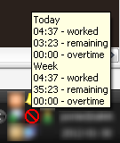

What is Ndsr?
Ndsr is small desktop application which creates and updates event in Google Calendar service. It is mainly used to count worked hours.
It can be configured to work only if appropriete IP is assigned to network interface. 
Authors
Download
Click here to download current version
Versions
versions which use old google api lib (gdata)
- 0.8.3 (zip)
versions which use new google api lib (google-api-client-lib)
changelog
- Added VersionRetriever.java to get version from manifest. Added counter field to Configuration.java Changed AboutFrame.java to be more readable. Added Help and About MenuItems to NdsrTrayIcon.java.
- Refactoring in GUI part. Added NdsrTrayIcon for tray icon management. Added AboutFrame not finished yet. Moved all panels to ndsr.gui.panel package.
- NSIS Installer script and icons. New configuration field httpProxyUseForAll and default value for event name = "Work". SettingsFrame is now injected to Ndsr and WelcomeFrame. Added Settings button to OAuthPanel. Refactored code of TabbedSettingsFrame moved some code to ConnectionSettingsPanel.
- Version 2.0 with OAuth and new Google API client library.
- New configuration options. Configuration for: - minutes ahead - minutes before first event - inactive time start and end
- Add logs to crawling through network interfaces.
- Add run ndsr at system startup (WINDOWS ONLY)
- Change version to 0.9.1
- Add build.num to ignored files
- Empty Configuration initialization. Out of work popup for Marek. Some refactoring. Remove build.num should be local for developer.
- Allow only one ndsr instance
- Add version and build number to jar. StatisticsFrame is created once and reused. Added 2 new options in Setting (not completed).
- NPE bugfix in isIpFromWork. TabbedSettingsFrame.java refactoring. Add icon settings to Configuration. Upgrade slf4j.
- Bug fixes for NullPointerException. Double click opens statistics window. Default event name if empty in configuration. Logs and Go to Calendar buttons in menu.
- Almost final StatisticsFrame with texts. Move charts generation to StatisticsFrame.
- Add exception handling, reauthorization and upgraded jna lib. Cleanup of unused items.
- Authorization exception fix
- Linux icons with gimp source files.
- Add new icon for not at work state and fix init bug.
- Move libraries from libs to lib. Add more error info on ServiceException
- cleanup in gitignore
- convert from netbeans into eclipse project.
- Add TabbedSettingsFrame.
- Add debug info for idleTime.
- Add implementation to LinuxIdleTime.
- Moved content from Win32IdleTime to WindowsIdleTime. Fix in Stats.java
- Some cleanup
- Fix for tray hint on linux.
- Add some debugs and windows idle time
- Add icon for linux. gh-1
- Adding toLower on os name.
- Adding idle time framework. refs #1
- Initial version of NDSR